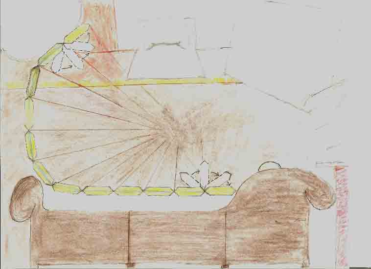

|
The Porthole
by Mike
This work is protected by copyright.
It is reproduced here with the author's permission.
| "Lady Salvia opened the porthole to consume me. Absurd, awesome, and spectacular spatial transformations occurred before my eyes that were as vivid and convincing as folding a piece of paper. My body became heavy and enveloped by the couch on which I was sitting. At moments, what looked like 4-fold gym mats radiated 360 degrees around the bottom of my neck. I had become caught in the fabric of space and time and could no longer feel my body. The blue horizontals outside each of the organically behaving yellow chain links simultaneously pulsed with audible rhythms coupled with my thoughts and garbled utterances. It seemed as if something was inside the segments." |

|